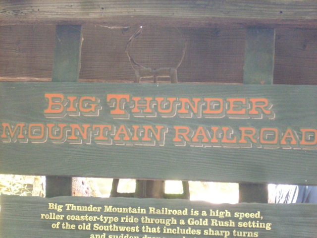
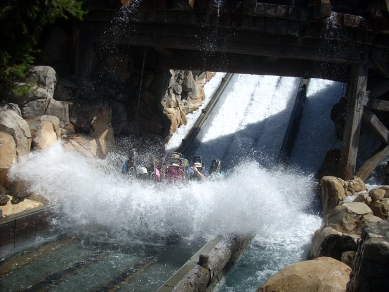
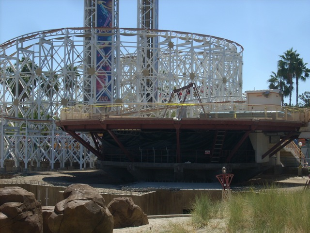
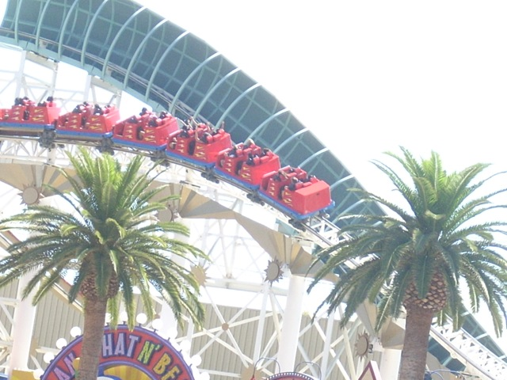

Labor Day DLR 2009
Ok, for Labor Day Weekend, we decided to head on down to the Disneyland Resort. And as you can see, there are way too many people around. I better put away my camera before I cause another Final Destination 3.
First up, Matterhorn. Though the good track was closed, so we had to settle with the mediocre other track.
"ZOMG!! Dolphins are SO much smarter than the idiotic humans. Not only have they learned to disguise themselves as shrubs, but they have learned the secret arts of diving into the earth!!!!!!"
 Welcome to hell.
Welcome to hell.
Hi. We're the Small World Dolls telling you to dump the oil and switch to Wind Power. We use Wind Power and look how we turned out.
 I better call a doctor. I'm seeing Pink Elephants. Must be from all the sound pollution this ride produces.
I better call a doctor. I'm seeing Pink Elephants. Must be from all the sound pollution this ride produces.

Ok, I can't take enough of that anymore. I have to go on a GOOD ride.
 And luckily for us, Thunder Mtn was running REALLY FREAKING WELL!!!!
And luckily for us, Thunder Mtn was running REALLY FREAKING WELL!!!!
Uh oh. This goat's about to die. I better go alert the media and tell them so they can halt all TV shows, freak out, mourn like hell, and plan a funeral for the poor goat at the Staples Center.
MORE FORCEFUL THAN USUAL THUNDER MTN MADNESS!!!!!!!!!!!
 Check out Thunder Mtn and its extra forceful badass self.
Check out Thunder Mtn and its extra forceful badass self.
 Ok, time for our typical lunch at our typical resteraunt.
Ok, time for our typical lunch at our typical resteraunt.
"I know what I'll be having for lunch."

Well, Celeste wanted to ride Grizzly. Why? I have no idea.
"Hey Random Stranger! Look out for the gyser!!!"
Here's another update in the California Adventure Construction Progress.

In the good news. The Orange is now gone!!! Hooray!!! That thing was always an eyesore!!!
Replacing the Orange are the Silly Swings. Coming in 2010. (Hopefully it won't be another eyesore.)
All that ugly construction made my eyes hurt. Time for a coaster to calm them down.
 Want to see what we at Incrediblecoasters think of Mullholland Madness, check out our Mullholland Madness Review and find out.
Want to see what we at Incrediblecoasters think of Mullholland Madness, check out our Mullholland Madness Review and find out.
BOO!!! NO EXTRA HUMP!!!!
Time for some Toy Story Mania Awsomeness.
You guys ready for Wii Play the Ride?
More DCA Construction.
 Time for some California Screamin Awsomeness.
Time for some California Screamin Awsomeness.

California Screamin over the palm trees.
 I have a really strong craving to go on Florida's Tower of Terror. (Actually, recently I've been having a strong craving to go back to Disney World.)
I have a really strong craving to go on Florida's Tower of Terror. (Actually, recently I've been having a strong craving to go back to Disney World.)
 Well, on the brightside, If I was in Florida, I wouldn't be able to go on Indiana Jones.
Well, on the brightside, If I was in Florida, I wouldn't be able to go on Indiana Jones.
 And to finish the day off, why not have a nice front seat ride on Space Mtn.
And to finish the day off, why not have a nice front seat ride on Space Mtn.
Home